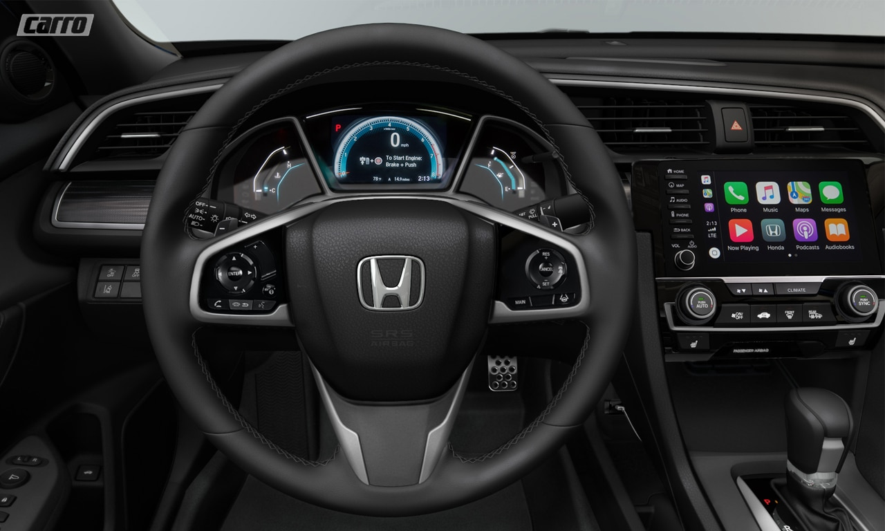

Com novidades para 2020, o novo Civic chega para continuar forte na disputa pelo segmento de sedans médios após passar por um leve facelift e ganhar uma nova versão de entrada, a LX, integrando a gama que já conta com Sport, EX, EXL e Touring.
Sem novidades mecânicas, o Civic 2020 conta com os motores 2.0 16v i-VTEC FlexOne com 155 cv e 19,5 kgfm abastecido com etanol ou 150 cv e 19,3 kgfm com gasolina no tanque, e o 1.5 16v VTC Turbo com injeção direta de combustível com 173 cv e 22,4 kgfm abastecido com gasolina na versão Touring. A transmissão é CVT para todas as versões. A variante sedan tem 4636 mm de comprimento, 1799 mm de largura, 1433 mm de altura, 2700 mm de distância entre-eixos e porta-malas com 519 litros de espaço para bagagens.
Entre os itens de série, já na versão LX, estão 6 airbags (frontais, laterais e de cortina), freios a disco nas quatro rodas com ABS, EBD e BAS, controles de estabilidade e tração, ISOFIX, direção com assistência elétrica progressiva, freio de estacionamento eletrônico, painel com velocímeto digital, ar condicionado com função automática, conjunto elétrico (vidros, travas e retrovisores), piloto automático, rodas de liga leve de 17” e central multimídia com tela de 5” e espelhamento de smartphone via Google Android Auto e Apple Carplay. A versão Sport diferencia-se pelo visual exclusivo, com grades e rodasescurecidas. Para a versão EX acrescenta-se retrovisores externos com repetidores em LED rebatíveis eletricamente, conjunto ótico com DRL em LED, faróis de neblina e câmera de ré. Além dos itens citados, a versão EXL conta com uma central multimídia de 7” com navegador e câmera de ré integrados, ar condicionado digital dual zone e bancos com revestimento em couro, além de ganhar faróis full LED. Para a versão topo de linha, Touring, inlcui-se teto solar elétrico, painel digital em TFT, sistema LaneWatch (sistema para redução de pontos cegos) e sensores de chuva e crepuscular. Na versão Si, esportiva, acrescenta-se rodas de liga leve de 18” e bancos esportivos em tecido exclusivo.
